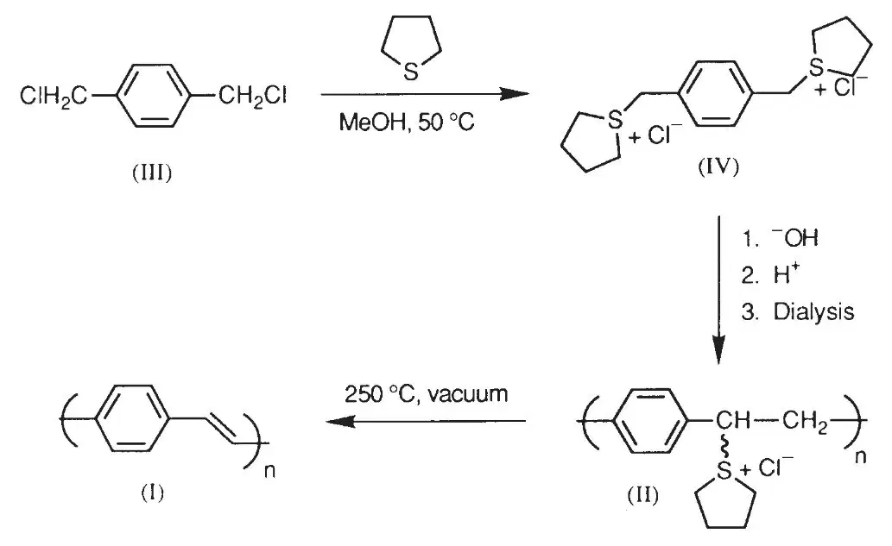
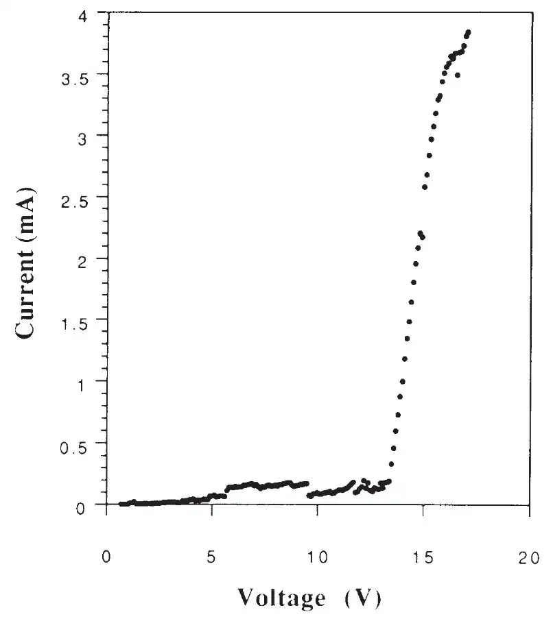
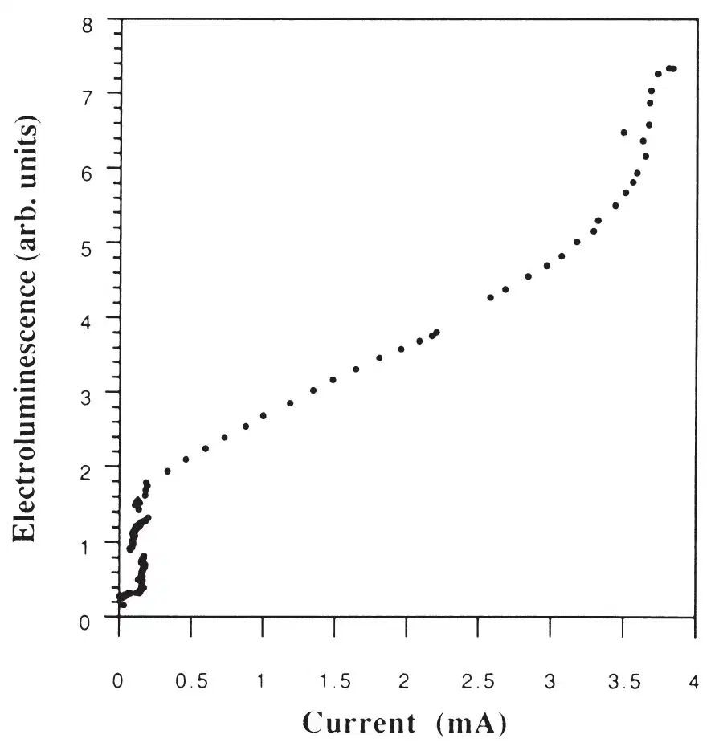
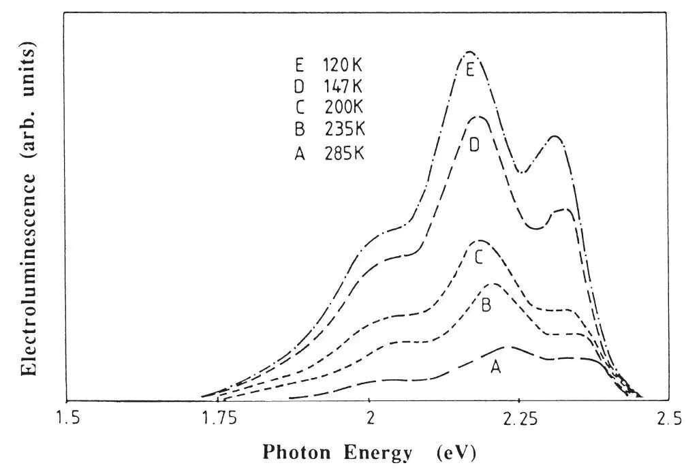

中文
中文J. H. Burroughes et al.
Editor’s Note
After the discovery of electrically conducting polymers in the 1970s, subsequent work identified several organic polymers with semiconducting electrical behaviour. One of them—poly (p-phenylene vinylene) or PPV—was prepared by Richard Friend and his co-workers at Cambridge. Here they show that PPV can be used in polymer light-emitting diodes (LEDs), which emit a yellowish light when an electrical current is passed through them. In conventional inorganic LEDs, new colours demand new materials. But the wavelength of light from polymer LEDs can be tuned by chemically modifying the polymer backbone. Such devices, spanning the entire visible spectrum, are now used in prototype commercial light-emitting displays. Being all-plastic, they can be rolled up like paper and fabricated using cheap printing technologies. 中文
Conjugated polymers are organic semiconductors, the semiconducting behaviour being associated with the π molecular orbitals delocalized along the polymer chain. Their main advantage over non-polymeric organic semiconductors is the possibility of processing the polymer to form useful and robust structures. The response of the system to electronic excitation is nonlinear—the injection of an electron and a hole on the conjugated chain can lead to a self-localized excited state which can then decay radiatively, suggesting the possibility of using these materials in electroluminescent devices. We demonstrate here that poly(p-phenylene vinylene), prepared by way of a solution-processable precursor, can be used as the active element in a large-area light-emitting diode. The combination of good structural properties of this polymer, its ease of fabrication, and light emission in the green–yellow part of the spectrum with reasonably high efficiency, suggests that the polymer can be used for the development of large-area light-emitting displays. 中文
THERE has been long-standing interest in the development of solid-state light-emitting devices. Efficient light generation is achieved in inorganic semiconductors with direct band gaps, such as GaAs, but these are not easily or economically used in large-area displays. For this, systems based on polycrystalline ZnS have been developed, although low efficiencies and poor reliability have prevented large-scale production. Because of the high photoluminescence quantum yields common in organic molecular semiconductors, there has long been interest in the possibility of light emission by these organic semiconductors through charge injection under a high applied field (electroluminescence)1-7. Light-emitting devices are fabricated by vacuum sublimation of the organic layers, and although the efficiencies and selection of colour of the emission are very good, there are in general problems associated with the long-term stability of the sublimed organic film against recrystallization and other structural changes. 中文
One way to improve the structural stability of these organic layers is to move from molecular to macromolecular materials, and conjugated polymers are a good choice in that they can, in principle, provide both good charge transport and also high quantum efficiency for the luminescence. Much of the interest in conjugated polymers has been in their properties as conducting materials, usually achieved at high levels of chemical doping8, and there has been comparatively little interest in their luminescence. One reason for this is that polyacetylene, the most widely studied of these materials, shows only very weak photoluminescence. But conjugated polymers that have larger semiconductor gaps, and that can be prepared in a sufficiently pure form to control non-radiative decay of excited states at defect sites, can show high quantum yields for photoluminescence. Among these, poly(p-phenylene vinylene) or PPV can be conveniently made into high-quality films and shows strong photoluminescence in a band centred near 2.2 eV, just below the threshold for π to π* interband transitions9,10. 中文
We synthesized PPV (I) using a solution-processable precursor polymer (II), as shown in Fig. 1. This precursor polymer is conveniently prepared from α,α′-dichloro-p-xylene (III),through polymerization of the sulphonium salt intermediate (IV)11-13. We carried out the polymerization in a water/methanol mixture in the presence of base and, after termination, dialysed the reaction mixture against distilled water. The solvent was removed and the precursor polymer redissolved in methanol. We find that this is a good solvent for spin-coating thin films of the precursor polymer on suitable substrates. After thermal conversion (typically ≥250 ℃, in vacuo, for 10 h), the films of PPV (typical thickness100 nm) are homogeneous, dense and uniform. Furthermore, they are robust and intractable, stable in air at room temperature, and at temperatures >300 ℃ in a vacuum11. 中文

Fig. 1. Synthetic route to PPV. 中文
Structures for electroluminescence studies were fabricated with the PPV film formed on a bottom electrode deposited on a suitable substrate (such as glass), and with the top electrode formed onto the fully converted PPV film. For the negative, electron-injecting contact we use materials with a low work function, and for the positive, hole-injecting contact, we use materials with a high work function. At least one of these layers must be semi-transparent for light emission normal to the plane of the device, and for this we have used both indium oxide, deposited by ion-beam sputtering14 and thin aluminium (typically 7–15 nm). We found that aluminium exposed to air to allow formation of a thin oxide coating, gold and indium oxide can all be used as the positive electrode material, and that aluminium, magnesium silver alloy and amorphous silicon hydrogen alloys prepared by radiofrequency sputtering are suitable as the negative electrode materials. The high stability of the PPV film allows easy deposition of the top contact layer, and we were able to form this contact using thermal evaporation for metals and ion-beam sputtering for indium oxide. 中文
Figures 2 and 3 show typical characteristics for devices having indium oxide as the bottom contact and aluminium as the top contact. The threshold for substantial charge injection is just below 14 V, at a field of 2×106 V cm–1, and the integrated light output is approximately linear with current. Figure 4 shows the spectrally resolved output for a device at various temperatures. The spectrum is very similar to that measured in photoluminescence, with a peak near 2.2 eV and well resolved phonon structure9,10. These devices therefore emit in the green–yellow part of the spectrum, and can be easily seen under normal laboratory lighting. The quantum efficiency (photons emitted per electron injected) is moderate, but not as high as reported for some of the structures made with molecular materials2-7. The quantum efficiencies for our PPV devices were up to 0.05%. We found that the failure mode of these devices is usually associated with failure at the polymer/thin metal interface and is probably due to local Joule heating there. 中文

Fig. 2. Current–voltage characteristic for an electroluminescent device having a PPV film 70 nm thick and active area of 2 mm2, a bottom contact of indium oxide, and a top contact of aluminium. The forward-bias regime is shown (indium oxide positive with respect to the aluminium electrode). 中文

Fig. 3. Integrated light output plotted against current for the electroluminescent device giving the current–voltage characteristic in Fig. 2. 中文

Fig. 4. Spectrally resolved output for an electroluminescent device at various temperatures. 中文
The observation and characterization of electroluminescence in this conjugated polymer is of interest in the study of the fundamental excitations of this class of semiconductor. Here, the concept of self-localized charged or neutral excited states in the nonlinear response of the electronic system has been a useful one. For polymers with the symmetry of PPV , these excitations are polarons, either uncharged (as the polaron exciton) or charged (singly charged as the polaron, and doubly charged as the bipolaron)15,16. We have previously assigned the photoluminescence in this polymer to radiative recombination of the singlet polaron exciton formed by intrachain excitation9,10 and, in view of the identical spectral emission here, we assign the electroluminescence to the radiative decay of the same excited state. The electroluminescence is generated by recombination of the electrons and holes injected from opposite sides of the structure, however, and we must consider what the charge carriers are. We have previously noted that bipolarons, the more stable of the charged excitations in photoexcitation and chemical doping studies, are very strongly self-localized, with movement of the associated pair of energy levels deep into the semiconductor gap, to within 1 eV of each other9. In contrast, the movement of these levels into the gap for the neutral polaron exciton, which one-electron models predict to be the same as for the bipolaron15, is measured directly from the photoluminescence emission to be much smaller, with the levels remaining more than 2.2 eV apart. For electroluminescence then, bipolarons are very unlikely to be the charge carriers responsible for formation of polaron excitons, because their creation requires coalescence of two charge carriers, their mobilities are low and the strong self-localization of the bipolaron evident in the positions of the gap states probably does not leave sufficient energy for radiative decay at the photon energies measured here. Therefore, the charge carriers involved are probably polarons. The evidence that they can combine to form polaron excitons requires that the polaron gap states move no further into the gap than those of the polaron exciton and may account for the failure to observe the optical transitions associated with the polaron. 中文
The photoluminescence quantum yield of PPV has been estimated to be ~8%. It has been shown10,17 that the non-radiative processes that limit the efficiency of radiative decay as measured in photoluminescence are due to migration of the excited states to defect sites which act as non-radiative recombination centres, and also, at high intensities, to collisions between pairs of excited states. These are processes that can, in principle, be controlled through design of the polymer, and therefore there are excellent possibilities for the development of this class of materials in a range of electroluminescence applications. 中文
(347, 539-541; 1990)
J. H. Burroughes*‡, D. D. C. Bradley*, A. R. Brown*, R. N. Marks*, K. Mackay*, R. H. Friend*, P. L. Burns† & A. B. Holmes†
* Cavendish Laboratory, Madingley Road, Cambridge CB3 OHE, UK
† University Chemistry Laboratory, Lensfield Road, Cambridge CB2 1EW, UK
‡ Present address: IBM Thomas J. Watson Research Centre, Yorktown Heights, New York 10598, USA
Received 21 August; accepted 18 September 1990.
References:
1. Vincent, P. S., Barlow, W. A., Hann, R. A. & Roberts, G. G. Thin Solid Films 94, 476-488 (1982).
2. Tang, C. W. & VanSlyke, S. A. Appl. Phys. Lett. 51, 913-915 (1987).
3. Tang, C. W., VanSlyke, S. A. & Chen, C. H. J. appl. Phys. 65, 3610-3616 (1989).
4. Adachi, C., Tokito, S., Tsutsui, T. & Saito, S. Jap. J. appl. Phys. 27, 59-61 (1988).
5. Adachi, C., Tsutsui, T. & Saito, S. Appl. Phys. Lett. 55, 1489-1491 (1989).
6. Adachi, C., Tsutsui, T. & Saito, S. Appl. Phys. Lett. 56, 799-801 (1989).
7. Nohara, M., Hasegawa, M., Hosohawa, C., Tokailin, H. & Kusomoto, T. Chem. Lett. 189-190 (1990).
8. Basescu, N. et al. Nature 327, 403-405 (1987).
9. Friend, R. H., Bradley, D. D. C. & Townsend, P. D. J. Phys. D20, 1367-1384 (1987).
10. Bradley, D. D. C. & Friend, R. H. J. Phys.: Condensed Matter 1, 3671-3678 (1989).
11. Bradley, D. D. C. J. Phys. D20, 1389-1410 (1987).
12. Murase, I., Ohnishi, T., Noguchi, T. & Hirooka, M. Synthetic Metals 17, 639-644 (1987).
13. Stenger-Smith, J. D., Lenz, R. W. & Wegner, G. Polymer 30, 1048-1053 (1989).
14. Bellingham, J. R., Phillips, W. A. & Adkins, C. J. J. Phys.: Condensed Matter 2, 6207-6221 (1990).
15. Fesser, K., Bishop, A. R. & Campbell, D. K. Phys. Rev. B27, 4804-4825 (1983).
16. Brazovskii, S. A. & Kirova, N. N. JEPT Lett. 33, 4-8 (1981).
17. Bradley, D. D. C. et al. Springer Ser. Solid St. Sci. 76, 107-112 (1987).
Acknowledgements. We thank J. R. Gellingham, C. J. Adkins and W. A. Phillips for their help in preparing the indium oxide films. We thank SERC and Cambridge Research and Innovation Ltd for support.